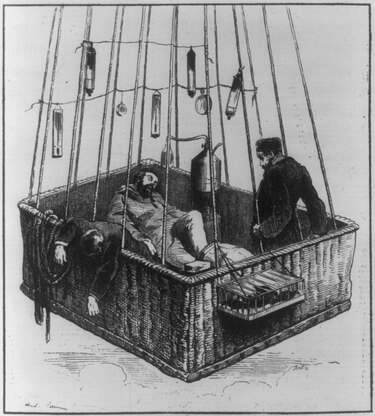
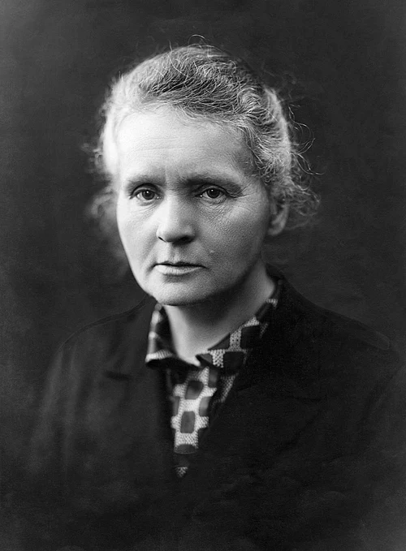
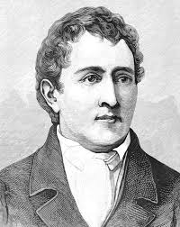

Question 1: There is significant historical controversy surrounding the circumstances of Archimedes's death. What is a common misinterpretation that diminishes the magnitude of his overall contributions to science and mathematics?

Question 2: From the Zenith hot air balloon tragedy, at what height does the thin air begin to unthread the mind itself?

Question 3: What elements did Marie Curie isolate, leading to her second Nobel Prize?

Question 4: What did Carl Wilhelm Scheele contribute to the scientific community?
Your quiz score is 0.